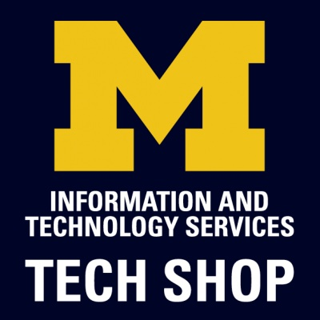

Proffessional Software Engineering Experience

Backend Engineer
Metropolis
 July 2022 - December 2022
July 2022 - December 2022
 New York, NY
Mobile commerce and parking technology
New York, NY
Mobile commerce and parking technology
Metropolis
July 2022 - December 2022
New York, NY
- Integrated notifications into customer flows to alert 2 million users to agreement changes without request overload
- Collaborated with senior engineers to build promo code infrastructure to align with growth objectives
- Presented at engineering conference to secure team cooperation in developing a unit test suite
Software Engineer Intern
System Surveyor
May 2020 - May 2022
Austin, TX
Site survey design platform
System Surveyor
May 2020 - May 2022
Austin, TX
- Programmed secure Python APIs for clarity and consistency in public API
- Developed production-level features using React.js for web application to enhance customer satisfaction when inviting new users
- Built & researched front-end smoke test suite using Cypress to assess program success and dependability
- Upgraded Python back-end unit test suite; improved global coverage by more than 10% to build confidence in new code reliability
Other Work Experience
Systems Adminstrator Intern
Lightspeed Systems
June 2020 - January 2021
Austin, TX
K-12 content filtering service
Lightspeed Systems
June 2020 - January 2021
Austin, TX
- Authored IT standards policy to define corporate technology use for over 200 employees
- Advised managers on development of a Confluence knowledgebase to consolidate shared resources

Office Assistant
Michigan Information And Technology Services: Tech Shop
January 2020 - August 2020
Austin, TX
Sales, service and support of personal technology to University of Michigan students, faculty, staff, and alumni
Michigan Information And Technology Services: Tech Shop
January 2020 - August 2020
Austin, TX
- Organized supplier credits for accounting and purchasing purposes
- Advised managers on development of a Confluence knowledgebase to consolidate shared resources
IT Intern
Lightspeed Systems
June 2019 - August 2019
Austin, TX
K-12 content filtering service
Lightspeed Systems
June 2019 - August 2019
Austin, TX
- Recognized for designing a new approach to user-friendly guides for corporate software apps
- Recorded hardware inventory and IT purchases for accounting and tracking purposes
- Compiled disparate policies and documents into a standardized format for knowledgebase transition
- Collaborated with HR team in onboarding and offboarding of employees